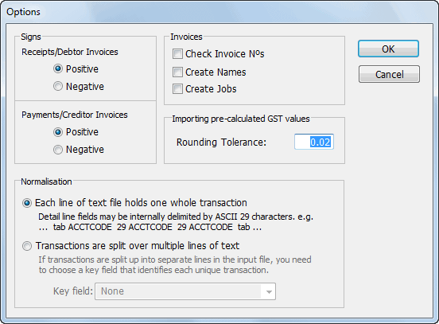
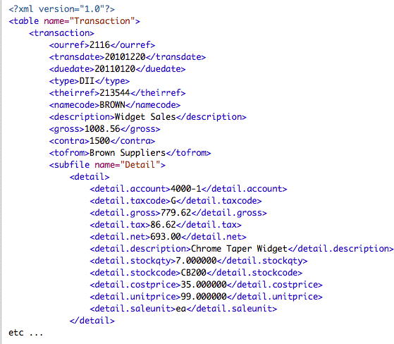
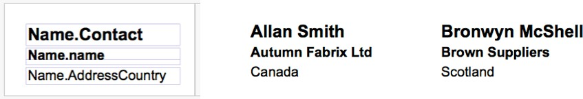
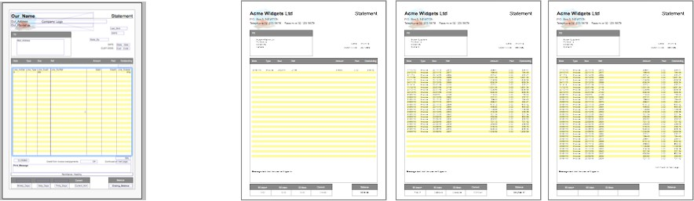
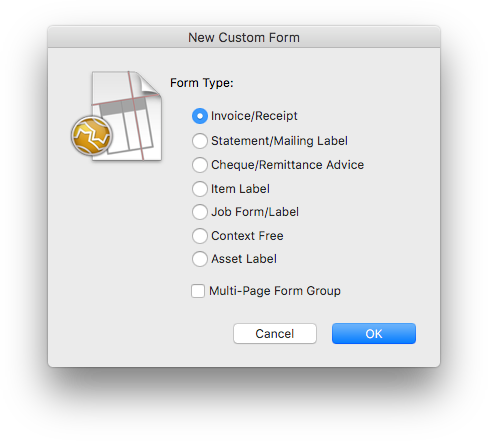
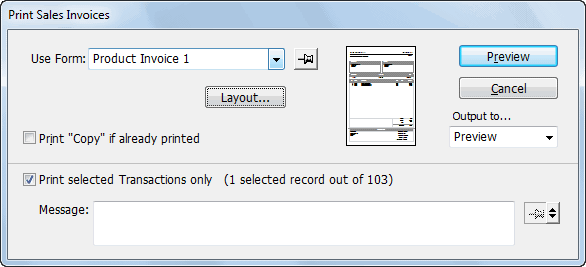

Clicking the Options button on the Import Settings window will display options that affect how the information is imported.

Signs: MoneyWorks can adjust the signs of values imported. By default MoneyWorks assumes that all import data will have positive values. If you are importing (say) Cash Receipts, and the import data is negative, then you must click the Negative radio button in the Receipts/Debtor Invoices box.
The signs of values for these transaction types will be corrected as the transactions are imported.
Check Invoice Nºs: Set this if you are importing Debtor Invoices and you want to ensure that imported invoice numbers do not duplicate existing ones.
Create Names: Set this if you want MoneyWorks to automatically create a new Debtor or Creditor record if the Debtor Invoice or Creditor Invoice being imported contains a Debtor or Creditor code that MoneyWorks does not know. When this box is checked, information can be imported into the fields designated by “Name.” in the Destination Field list.
Create Jobs: Set this if you want MoneyWorks to automatically create a new Job record if the transaction being imported contains a job code that MoneyWorks does not know. When set, MoneyWorks will create a new (descriptionless) job record for unknown job codes, otherwise an error will be reported for unknown jobs.
Rounding Tolerance: MoneyWorks expects that the sum of the Detail.Gross values will equal the transaction Gross value. If you are importing the transaction gross value and have MoneyWorks work out the Detail.Gross values for you, you may find that the application in which the transactions were created rounded the GST differently, resulting in an inequality between the sum of the individual gross values and the overall gross value.
MoneyWorks is lenient concerning the foibles of the source application. Provided that the difference between the imported transaction gross value, and the total gross as calculated by MoneyWorks is less than or equal to the Rounding Tolerance specified ($0.02 by default), MoneyWorks will adjust the individual GST values in the detail lines as it imports the transaction so that the detail line gross values sum up to the transaction gross value that is imported.
Each line of text holds one whole transaction: Set this if each record in the import file holds the information for a complete transaction. This is the format to use if you are importing information from another MoneyWorks document. This format is also suitable for FileMaker Pro repeating fields
Transactions are split over multiple lines of text Set this if one record in your source file corresponds to a transaction detail line in MoneyWorks. For MoneyWorks to know when a new transaction starts there must be a Key field, which holds the same value for each record within a transaction.
Choose this field from the Key Field pop-up menu—the field you choose will be displayed in red on the import map. Adjacent records from the imported file with the same key field value will be amalgamated into a single transaction.
Note: MoneyWorks will not import any transactions that are dated after the end of the current period.
When importing from a tab-delimited (or CSV) text file, an ASCII CR or LF is used as a record delimiter, so cannot be included in the data to be imported. If you want to import a newline, you need to use ASCII value 11 (Hex 0B, LINE TABULATION). MoneyWorks will map this to a newline character (stored internally as a CR, CARRIAGE RETURN).
MoneyWorks has heuristics for determining sensible values for fields that you do not import values into. To use the heuristic, double click on the field value in the right hand column and click the Work it Out For Me radio button. The following table describes the fields for which the Work It Out For Me option is available and how they are evaluated by MoneyWorks.
Field Name Heuristic
OurRef If the transaction type is DI, then use the next sequential invoice number. TransDate Use today's date.
DueDate Use the Names' payment terms to work out the due date.
Type If there is a debtor/creditor code present in the NameCode field, then the transaction must be an invoice. If the account in the first detail line is an income account then it is a Debtor Invoice (DI), otherwise it is a Creditor Invoice (CI).If there is no debtor/creditor code then if the first detail line is an income account then it is a Cash Receipt (CR), otherwise it is a Cash Payment (CP).
Gross Use the sum of the gross values in the detail lines.
Contra For invoices, use the Accounts Receivable or Accounts payable account for the Debtor or Creditor.For cash transactions we can't decide which bank to use so if importing cash transactions you should not use the Work It Out option for Contra. (MoneyWorks will insert = "no bank into the Contra field which will generate an error.)
ToFrom For invoices, use the company name of the debtor or creditor.
Hold For debtor invoices, set to Yes if the Auto Credit Hold option is on in the preferences and the debtor has overdue invoices or is over the credit limit specified in the Debtor record.
Detail.Account Use the relevant control account for the product in Detail.StockCode. Do not use Work it Out for this field if you are not importing product codes.
Detail.TaxCode Use the tax code for the account in Detail.Account
Detail.Net If there is a stock code in Detail.StockCode, use Detail.UnitPrice * Detail.StockQtyOtherwise use Detail.Gross - Detail.GST
Detail.Gross Use Detail.Net + Detail.GST
Detail.GST If we know the net and the tax code, use Net * Tax Rate.If we know the gross and the tax code, use Gross - (Gross / (1 + Tax Rate)).If we know gross and net, use Gross - Net.
Detail.UnitPrice If there is a stock code, look up the product sell price in the Products file Detail.CostPrice If there is a stock code, look up the product's average stock value in the
Products file. For a transaction of type CI or CP, the buy price.
Detail.Unit If there is a stock code, look up the product sell or buy unit in the Products file
The following table gives a list of any special import requirements. For a full list of fields, refer to Appendix A—Field Descriptions.
| Field |
|
|
|---|---|---|
| OurRef |
|
|
|
||
|
||
| TransDate |
|
|
|
||
|
||
|
||
| DueDate |
|
|
|
||
|
||
| Type |
|
|
|
||
|
||
| TheirRef |
|
|
|
||
|
||
| NameCode |
|
|
|
||
| Flag |
|
|
|
||
| Gross |
|
|
|
||
|
||
| ToFrom |
|
|
|
||
|
||
|
| Contra | 7 |
|
|---|---|---|
| Hold |
|
|
| Salesperson | 5 |
|
| Recurring |
|
|
| n.Detail.Account | 13 |
|
| n.Detail.TaxCode | 3 |
|
| n.Detail.Net |
|
|
| n.Detail.Tax |
|
|
| n.Detail.Gross |
|
|
| n.Detail.Description | 255 |
|
| n.Detail.StockQty |
|
|
| n.Detail.StockCode | 15 |
|
| n.Detail.CostPrice |
|
|
| n.Detail.SaleUnit | 3 |
|
| n.Detail.UnitPrice |
|
|
| n.Detail.JobCode | 9 |
|
| Name.CustType |
|
|
| Name.SuppType |
|
|
| Name.Terms |
|
|
| Name.Hold |
|
debtors.
The transaction detail line fields appear in the field list as N.Detail.FieldName where N is a number denoting that the fields with that number belong to the same detail line definition. You can have many detail line definitions. When you use a field in the last detail line definition, MoneyWorks automatically appends a new set of detail line fields to the bottom of the field list. You do not have to use the new set if you do not need them.
Values imported into the n.detail.serialnumber and n.detail.stocklocation fields are not validated by MoneyWorks (the assumption is that you have clean data coming in from the other system). For purchasing serialised items this is as expected, as the serial numbers will not exist. However for sales it is possible to sell a serial number that does not exist in MoneyWorks (this can be corrected if necessary with a Stock Transfer Journal).
If a non-existent location is imported on a detail line, it will be used in the imported transaction, but no corresponding new location will be created in the “Stock Locations” validation list. You will need to create this location yourself if you want to use the bogus location.
If you are importing repeating fields from FileMaker Pro, the repetitions will appear in the data list with slashes (/) between them. This slash actually represents the ASCII value 29 (Hex 1D, INFORMATION SEPARATOR THREE) that FileMaker inserts between exported repeating fields. Repeating fields can only be imported into detail line fields.
When repeating fields are imported into a transaction detail line, as many detail lines as there are repetitions of the repeating fields will be created. Each repeating field must have the same number of repetitions.
Note: If you elect to place a constant value into a detail line field, and other fields of that detail line have repeating values imported into them, the same constant value will be inserted for each of the lines thus created.
Journals in MoneyWorks are always debiting/crediting the detail.net value, and do not have a GST/VAT/Tax component, and hence the detail.gross value is not strictly defined. For this reason you should always set the detail.tax to 0, and both the detail.taxcode and detail.gross to "work-it_out". This applies whether using an import map or xml.
The Error Messages Table lists the possible error messages that you may get when attempting to import transactions along with an explanation and/or suggested remedy.
Message Explanation
an accounts payable account
Contra account "<CODE>" is not an accounts receivable account
Could not determine transaction type.
Couldn't adjust for rounding error. Transaction not written
Debtor/creditor code missing
Detail line does not balance
Details don't match gross
For Debtor Invoices, the Contra field must contain an Accounts Receivable account.
There was not enough information for the Work It Out heuristic to determine the transaction type. Typically this is because there were no detail lines for the transaction.
If there is serious sunspot activity and Venus is in Sagittarius it may happen that MoneyWorks cannot adjust the GST values in the detail lines to make the sum of the detail line grosses match the transaction gross. This "cannot happen", but if it does this error will occur during the import phase (not the check phase). The transaction will need to be corrected in the source application.
When importing invoices, you must supply a debtor or creditor code. Detail.Net + Detail.GST does not equal Detail.Gross
The supplied transaction gross value does not match the sum of the detail line gross values (actually, the difference is larger than the specified rounding tolerance). The gross value supplied may not include all of the detail lines that
"<CODE>" is not a creditor
"<CODE>" is not a debtor
The transaction is a Creditor Invoice, but the NameCode supplied does not correspond to a creditor. It may correspond to a debtor, in which case you will need to open the debtor in the Debtors/Creditors list and click in the Creditor check box.
The transaction is a Debtor Invoice, but the NameCode supplied does not correspond to a debtor. It may correspond to a creditor, in which case you will need to open the creditor in the Debtors/Creditors list and click in the Debtor check box.
Field dependency too complex
Field too long (<Field Text>)
you are importing or you may be importing the wrong gross values (are you importing net values into the Detail.Gross field for example?)
MoneyWorks could not determine a value for one of the Work it Out fields. You may have a circular dependency. This will happen if, for example, you specify Work It Out for all of the Net, GST and Gross fields of a detail line. MoneyWorks does not have enough information to work out sensible values.
The text is too long to fit into the field. Text fields in MoneyWorks are limited in length. You must shorten the text in the source file.
"<TYPE>" is not a
Transaction type must be one of CR, CP, DI, CI., JN, SO, PO or QU
Invalid character You have included a space or an @ sign in the debtor or creditor code.
valid transaction type
Account Code not specified
Bad field type (<Field Text>)
Contra account "<CODE>" does
The Detail.Account field is blank.
You may get this error if MoneyWorks was expecting a number or a date, and the text was not a valid number or date. You should check the field ordering because you may be importing information into the wrong fields.
The value supplied for the Contra field is not a valid account code.
Invalid record format
Invalid transaction date
The Name "XXX" is not of the correct type
Not enough fields
The data in the text file does not correspond to the format that was specified.
The transaction date is not a valid date. Make sure that the dates in the import file match the local date formatting
You are attempting to import a sales invoice to a name that is not a debtor, or a purchase invoice to a name that is not a creditor. You need to change the settings in the original name record.
There are less fields in the import file than were specified to be imported. The source application may not be exporting records in a consistent format.
not exist Contra account
"<CODE>" is not
For cash transactions, the Contra field must contain a bank account code.
Record too long The record is larger than MoneyWorks' import buffer. The only solution to this problem, should you encounter it, is to reduce the amount of information in the record.
a bank account
Contra account "<CODE>" is not
For Creditor Invoices, the Contra field must contain an Accounts Payable account.
Run out of disk space!
There is no room on the disk to make more transactions. You need to quit from MoneyWorks and make more space available on your hard disk. If this happens, you will get this error during the import phase (not the check
Specified period not open
Stock journals cannot be imported
System account not allowed
Tax cannot be applied to a * account transaction
The account "<CODE>" does not exist
The Debtor/ Creditor field must be empty for cash transactions
The debtor/ creditor "<CODE>" does
phase). The import will stop.
MoneyWorks determines the transaction period from the transaction date. The transaction date may be beyond the end date of the most recent period. You will need to open a new period before you can perform the import.
MoneyWorks does not allow you to import stock journal transactions. General journals are OK, using JN for the transaction type. and a negative detail.net for a credit. Tax must be zero.
You cannot include "system" accounts in imported transactions. System accounts include bank accounts, accounts payable/receivable, profit and loss, and GST control accounts. MoneyWorks automatically inserts an "invisible" detail line for the contra account, which is always a system account (either BK, AR or AP). You can see this detail line when you print transactions with the Print Full Details option.
The Detail.GST field is non-zero and the tax code for the detail line is *. The * tax code must not have tax applied to it.
The account code in one of the detail lines is not a valid account code.
You have imported a value into the NameCode field (or used a constant value) and the transaction type is not CI or DI. The NameCode field must be blank for cash transactions. You cannot import receipts or payments that correspond to invoices using transactions--see Importing Payments/Receipts on Invoices
The debtor or creditor code supplied in the NameCode field does not correspond to an existing debtor or creditor. To have MoneyWorks create new creditors when an unknown creditor code is encountered, click the Create
Importing payments on invoices is similar to importing other transactions except that the imported payments are automatically posted. You can import payments/receipts on invoices by choosing File>Import>Payments on Invoice, or if you have the information on the clipboard, you can hold down the option key (Mac), or the shift key (Windows) and choose Edit>Paste Records.
If the Payment.InvoiceID is set to Work it Out, MoneyWorks will choose which invoice to allocate the amount to based on the Credit Handling pop-up in the Import Options (for a discussion of the options, see Accepting the Batch of Debtor Receipts.
The import fields are:
Field Size Description
OurRef 11 For Cash Payments, the cheque number;for Cash Receipts, the
receipt number;
TransDate The date of the transaction. This should be normally specified in dd/mm/yy format (If your system is set up for U.S. date formats, you will need to specify dates in mm/dd/yy format)MoneyWorks will also accept dates in d mmm yyyy format. Work it out will insert today's date.
Type 2 CP for Cash Payment; CR for Cash Receipt
not exist The invoice
Names check box in the Options dialog box when setting up the import. If the Check Invoice N°s option is being used, you will get this error if the
NameCode[Required field]
9 For debtor invoices, this is the debtor code;for creditor invoices, it is the creditor code.
number:
<NUMBER> is
already used
invoice number (OurRef field) being imported is the same as the invoice
number of an existing invoice. If you are using the Work It Out option for OurRef, you may need to set the next Invoice Number correctly in the
Flag 5 This can be any text. If this field is not blank, a flag icon shows
up in the status column of the transaction list.
Description 255 The transaction description.
The Tax Code "<CODE>" does not exist
Preferences (see Sequence Nos).
The tax code is not present in the tax table. This is most likely a fault in the source file, but you can also correct this problem by adding the code to the tax table using the Tax Codes command.
Gross[Required field]
The amount of the transaction. This must equal the sum of the payment amounts. It will be set automatically to the sum of the payments/receipts if the Work it out option is set.
Too many fields There are more fields in the import file than were specified to be imported. The source application may not be exporting records in a consistent format.
| Analysis |
|
|
|---|---|---|
| ToFrom |
|
|
| Salesperson |
|
|
Transaction is dated after current period
Warning - Tax code missing
The transaction date is after the end of the current period. You need to open the new period(s) before you can import the transactions.
The Detail.Tax Code field was empty. You will get away with this warning only if the Detail.GST field is zero. You should really ensure that the tax code is supplied. This can be done easily by using the Work It Out option.
Payment.InvoiceID 7 For receipts, this is your invoice number (which must be
unique). For payments, this can either be your order number (which ought to be unique), or the creditors invoice number (which ought to be unique for that creditor)--this choice is set in the import Options.If this field is set to Work it Out, payments are allocated based on the Credit Handling pop-up in the Import Options.
Payment.Amount N The amount of the payment/receipt to be allocated to invoice
InvID. For payments, this must be less than the outstanding invoice amt. For receipts, any surplus will be handled as an overpayment.If this field is set to Work it Out, the minimum of the outstanding balance of the invoice and the residual amount from the gross is allocated.
You cannot export payments/receipts on invoices in a manner that is suitable for importing back into MoneyWorks. However you achieve the same result by using a variant of Edit>Copy. To export payments or receipts on invoices:
Hold down the option key (Mac) or the shift key (Windows) and choose Copy from the Edit menu
MoneyWorks will copy the highlighted payments/receipts against invoices to the clipboard, ignoring those that are not payments/receipts against invoices. The format used is tab delimited with repeating fields.
You can paste this into a spreadsheet or word-processor, and save the resulting document as a text file if you wish, or option/shift paste it into a another MoneyWorks document.
Hold down the option key (Mac) or the shift key (Windows) and choose Paste from the Edit menu
The import map for Payments on Invoices will be displayed.
Note: The target MoneyWorks document must have the same invoices (and Names) as the originating one, with unique invoice numbers.
To view or set the product import options click the Options button in the Import Field Order window.
Update if Exists: If set, MoneyWorks will update the data for any records whose product code matches the code of the record being imported. Calculated values are imported only if the update option in the Use Value window is on. If the Update if Exists option is off, then MoneyWorks will report an error if the code for a record being imported matches an existing code.
Sell Prices are Tax Inclusive: If set, all sell prices imported are stored as GST Inclusive, otherwise they are stored as GST Exclusive, unless overridden by a setting in the Flags field.
The following fields may need special consideration when importing into MoneyWorks. For a full description of product fields see Products (Items).
| Field | Size |
|
|---|---|---|
| Code | 15 |
|
| Supplier | 11 |
|
| SalesAcct | 13 |
|
| StockAcct | 13 |
|
| COGAcct | 13 |
|
| SellPrice |
|
|
| BuyPrice |
|
|
| AverageValue |
|
|
| ConversionFactor |
|
|
| SellDiscount |
|
|
| SellDiscountMode |
|
|
| Type |
|
Flags This is used to set the various selling price options for the products, each of which is represented by a bit.
fBreakAdd = #00008000
fReorderWarn = #00000100
fPriceTaxInclusiveA = #00000200
fPriceTaxInclusiveB = #00000001
fPriceTaxInclusiveC = #00000080
fPriceTaxInclusiveD = #00001000
fPriceTaxInclusiveE = #00002000
fPriceTaxInclusiveF = #00004000
fCostPlusD = #00010000
fCostPlusE = #00020000
fCostPlusF = #00040000
fDiscountD = #00080000
fDiscountE = #00100000
fDiscountF = #00200000
Note that the Buy, Sell, and Inventory options will be set according to which control account fields you supply. This can only be done when importing new products, not when updating existing ones. If you supply an asset account to make a product inventoried, the Type must be P (in fact it will be forced to P).
Message Explanation
To view or set the Name import options click the Options button in the Import Field Order window. Note that Mac users can import their Mac Address Book directly using the File>Import>Address Book command.
If you set this option, MoneyWorks will update the data for any records whose code matches the code of the record being imported. Only imported fields are updated—default values and Work-it-Out values will be updated only if the Set this field when updating existing records as well option is set — see Update if exists.
If this option is off, then MoneyWorks will report an error if the code for a record being imported matches that of an existing record.
This feature could be used to update customer address lists from an external database.
The product code "<CODE>" is already in use
Product code is not unique. Check that there is no existing code in your product file and that the code does not appear twice in the import file. If you are trying to update existing products, you need to set Update if
The following Names fields need special consideration when importing. For a
Exists.
complete list of fields, see Names.
Sales account "<CODE>" not found or wrong type
Stock account "<CODE>" not found
Sales account must be an Income account.
Stock account must be Current Asset
| Field |
|
|
|---|---|---|
| Code |
|
|
| CustomerType |
|
|
| SupplierType |
|
|
| DebtorTerms |
|
|
| CreditorTerms |
|
|
| Hold |
|
|
| CreditLimit |
|
|
| RecAccount |
|
|
| PayAccount |
|
|
or wrong type
Product code missing You must supply a product code
COGS account "<CODE>"not found or wrong type
COG/Purchase account must be Expense.
Message Explanation
There are no options for job sheet items.
The Accounts Receivable control account is not valid-- missing or wrong type.
The Accounts Payable control account is not valid--missing or wrong type.
The debtor/creditor code is longer than 6 characters. It will be
| Field |
|
|
|---|---|---|
| Job |
|
|
| Qty |
|
|
| Resource |
|
|
| Units |
|
|
| Date |
|
|
| CostCentre |
|
|
| CostPrice |
|
|
| Sell Price |
|
|
| Status |
|
The Accounts Receivable control account is not valid--missing or wrong type.
The Accounts Payable control account is not valid--missing or wrong type.
This is a warning only. You can still import if you get this error.
The fields that may require special consideration when importing are outlined below. For a full list of fields see Job Sheet Items.
truncated.
The debtor/creditor code has spaces or wildcards. They will be converted to underscores.
This is a warning only. You can still import if you get this error.
Note: As for manual entries in the job sheet, MoneyWorks will make and post a
There is only one Job import option, Update if Exists. To view or set this click the
Importing Tax Rates In MoneyWorks Gold/Datacentre, you can import taxes from a tabbed or comma delimited (CSV) file to create new tax codes or to update the rates on existing codes. The format for importing taxes is fixed as follows, and all fields must be present:
|
||
|---|---|---|
| Tax Code |
|
|
| Tax Name |
|
|
| Type |
|
|
| Rate1 |
|
|
| Changeover |
|
|
| date | ||
| Rate2 |
|
|
Options button in the Import Field Order window.
If Update if Exists is set, MoneyWorks will update the data for any records whose code matches the code of the record being imported. Only imported fields are updated—default values and Work-it-Out values are ignored and these fields retain their original information.
If this option is off, then MoneyWorks will report an error if the code for a record being imported matches that of an existing record.
The fields that may require special consideration when importing are outlined below. For a full list of fields see Jobs.
Field Size Description
Job 9 The job code. This must be unique. Client 11 Must be a valid debtor code.
stock requisition journal for any imported job sheet entries whose resource code is that of an inventoried product.
To import tax codes, choose File>Import>Tax Codes/Rates.
Notes
If a tax code exists, that tax will have its details updated, otherwise a new tax will be created.
If there is no changeover date, set the date to today's date and make the two rates the same.
Composite taxes cannot be imported.
Imported taxes cannot be All Tax.
The Tax code is for a different country settings cannot be set or changed by importing.
You must be the only user connected to MoneyWorks to import tax rates (the database is locked so other users cannot connect)
MoneyWorks supports importing by AppleEvents on the Mac and COM on Windows, as well as through the REST API. This allows the seamless transfer of information from other applications into MoneyWorks, even across a network. For example, an Excel spreadsheet can submit data directly to (and suck information directly out of) a MoneyWorks document.
MoneyWorks Datacentre also allows for communication through the command line interface (CLI) and REST APIs. This allows remote websites to query MoneyWorks (and also submit transactions and other information) using common tools such as PHP.
For more information on this please see: http://www.cognito.co.nz/developer/
MoneyWorks supports import and export of xml-formatted data. This removes the need to preconfigure an import map when building automated importing scripts (although you will still need to understand import maps). XML is the only import format supported by the REST interface.
For manually invoked XML import, there is an XML option to the Import menu, and you can also drag & drop .xml files into list windows to invoke an import (provided there are no errors, it will just happen). You can also copy XML text and paste it directly into a MoneyWorks list.
XML files to be imported must be valid XML and must provide the necessary fields to specify valid record data for MoneyWorks. For example, if importing a transaction, the transaction line items must add up and agree with the transaction total; the transaction type and necessary fields such as Contra must be specified. This is no more or less that you would do with an Import Map. You can’t just throw some partial data in and expect MoneyWorks to read your mind about what it means4.
The import format is compatible with the XML export format that MoneyWorks produces. You can export a table using the REST APIs, e.g.
http:// ... /REST/Acme%20Widgets/export/table=name&format=xml
and also from the command line with, e.g:
moneyworks -e 'export table="transaction" format="xml"' document.moneyworks
This exports the entire transaction table to stdout.
The import file may contain a single <table> element, or may contain an
<import> element with multiple <table> elements within it. The <table> elements can be for different tables.
The <table> element must have a name attribute specifying the target table for the import.
The <table> element will contain multiple record elements, whose element name will be the table name (e.g. <transaction>). Each record element will contain a set of field elements whose names are valid fieldnames from the MoneyWorks schema (e.g. <ourref>). See Appendix A—Field Descriptions for table and field names.
Note that localised formats are not used for date and numbers. Dates must be specified in YYYYMMDD format. Numbers must be formatted without thousands separators and non-integers must use '.' as the decimal separator.
As a special case, transaction elements will also contain a <subfile> element, which will contain multiple <detail> elements specifying the line items for the transaction.
Likewise, calculations can be done using the calculated attribute. In this case the text within the element is treated as an expression whose result is used as the actual import data for the element. If you are referencing imported fields, those fields must have appeared earlier in the xml file. E.g:
<user1 calculated="true">Lookup(NameCode, "name.Category2")</user1>
Fields and subrecords with the attribute system=”true” will be ignored by the importer.
Where appropriate, the same import options available in the regular import can be specified as attributes of the table element.
The following attributes may be specified for the transactions table. They correspond to the equivalent setting in the Transaction import options dialog or the parameter to the regular scripted import:
create_names="true"
create_jobs="true"
rounding_tolerance="D" - (where D is a dollar amount. 0.02 is the default)
negate_in="true"
negate_out="true"

update="true" seqnum="N" - where N is a sequence number. Allows Debtor Invoices to be "recalled" (replaced or cancelled and replaced depending on whether posted or not).- response of the import command will be a sequence number of last record imported instead of a success notification
return_seq="true"
The Work-it-Out facility for fields that support it can be invoked with an empty field name tag with the attribute work-it-out=”true” (you can determine such support by checking the relevant field in the usual importing configuration dialog - if the field options support work-it-out there, then it is supported by the XML importer). E.g:
post="true" seqnum="N" - where N is a sequence number
discard="true" seqnum="N" - where N is a sequence number of unposted trans to be deleted. This usage is deprecated
For Importing Names, Jobs, and Products (Items)
- General update case for non-transaction tables (Items, Jobs, Names) - updates the provided fields
update="true"
<transdate work-it-out="true" />
The XML format for importing payments on invoices is slightly non-obvious. The table name attribute for the import needs to be “payments”, but the top-level records that you import are <transaction>, with subrecords of <payments>.
E.g:
because the value of ourref will be worked out based on the transaction type, which is undefined in the first example. In the second example, MoneyWorks knows that you are importing a Debtor Invoice (Sales Invoice), so it knows how to work out the ourref value.
1 To open the file in the target application, you should start the application and choose Open from its File menu.↩︎
2 Possible errors are listed at: Transactions; Names and Products .↩︎
3
<?xml version="1.0"?>
<table name="payments">
<transaction>
<namecode>GREEN</namecode>
<ourref>123456</ourref>
<transdate>20101030</transdate>
<gross>380.25</gross>
<contra>1001</contra>
<subfile name="payments">
<payments>
<invoiceid>2041</invoiceid>
<amount>380.25</amount>
</payments>
</subfile>
</transaction>
</table>
If you are importing payments or receipts on invoices, you need to use the Import Payments on Invoices command.↩︎
4 The Mind Reading feature of MoneyWorks is still in early beta.↩︎
Unlike an import map, the order of the fields is important. Thus in importing a transaction the following
<?xml version="1.0"?>
<table name="transaction">
<transaction>
<ourref work-it-out="true" />
<type>DI</type>
...
will not produce the same value for ourref as:
<?xml version="1.0"?>
<table name="transaction">
<transaction>
<type>DI</type>
<ourref work-it-out="true" />
...
A fundamental part of running a business is sending out business “forms”, such as invoices, statements and cheques. MoneyWorks comes with a rich set of forms, all of which have been created, and can be modified, using the built in Forms Designer.
You can use the Forms Designer to create (amongst others):
Invoices and Receipts
Product Price Labels
Cheques and Remittance Advice Slips
Job Work Sheets
Statements
Mailing Labels
Dunning Letters
Shipping Labels
You can also use the Forms Designer to create other forms and labels such as:
Disk Labels
Mailing Labels
Flyers
Form Letters
The Forms Designer allows you to create multi-part and multi-page forms, and to print multiple forms per page (for labels). It has drawing tools and calculation facilities to allow you to create forms which are not only aesthetically pleasing, but are also “smart”. Such forms, when emailed or saved as a pdf, can have “hot links” (hyperlinks) that will go to a web site or to generate an email.
Once you have created your form, you save it into the Forms folder in the MoneyWorks Custom Plug-ins folder — see Managing Your Plug-ins. Once there, the name of the form will appear in a pop-up menu called “Use Form:” whenever you print statements, cheques, invoices, receipts etc. from MoneyWorks. You can choose one or more of the forms in the menu and these forms will be used to format the information that you are printing—see Printing Invoices, Receipts and other Transaction Forms for further information.
Before getting into the nitty-gritty of forms, let’s step back and look at the components that make up a form.
Consider going to a conference and receiving a badge with your name and company to wear. This is an example of a very simple form (and yes, you can design these in the MoneyWorks Forms designer). Essentially, for each selected name record you print the name and contact name—there is a one to one correspondence to the items you are printing and fields on the form. You are going to get exactly one label per record.
Use fields to display simple information, such as the name on a contact badge, that changes with each form

Fields are used in the form designer layout (on left) to produce information that changes with each form printed.
The conference badge will also display information that is the same for each attendee, such as the conference name and logo.
Use the text and adornment tools for static text and graphics, such as the company name and logo, that remain the same across forms
Text and adornment are used for features that do not change across forms.
Now consider a statement. This is also based on your entries in your Names list, but is more complicated because it has an indeterminate length—typically it will list invoices and payments, of which there might be just one, or several hundred. Thus, depending on the number of transactions on the statement, the statement might be just one page long, or several.
Use lists to display repeating information such as transactions on a statement

The list in the statement form accommodates a varying number of transactions.
An invoice is similar to a statement, but its starting point is not a name, but a transaction. Again the length (and hence number of pages) of the invoice depends on how many lines there were on the transaction—there might be one line, or a thousand. And regardless of this, the invoice might always end with a page of terms and conditions.
Use sections where a form has different pages of information, such as terms and conditions, that need to be collated together onto the same form.
A section in a form presents information on a new page in an entirely different format.
To create a new form:
You will be prompted for the type of form (see below), and when this is selected the new (blank) form will be displayed in a window. You can then add graphics and field information.
Whenever you are creating or modifying a form, you have access to the Forms menu, which is a sub-menu in the Edit menu. This contains commands that are specific to the Forms Designer.
There are several different form types to choose from.

Invoice/Receipt: Choose this form type if you want to create a form for printing Debtor Invoices or Cash Receipts. You also use this type for forms for printing Cash Payments and Purchase Orders. This form type allows you to include information from the detail lines within a transaction.
If you give the form a name that ends in “by detail line”, the form will print once for each detail line on a transaction. This allows you (for example) to print an individual price label for each line item of an invoice (or, if you set
the copies function to Detail.StockQty, a label for each item receipted). This type of form must not have a list in it.
Statement/Mailing Label: Choose this form type if you want to create a form for printing customer statements or mailing labels for customers or suppliers. This form type allows you to include a list containing transactions related to the customer (or supplier).
Cheque/Remittance Advice: Choose this form type if you want to create a form for printing remittance advice slips for creditor payments or for printing onto pre-printed cheque stationery. This form type allows you to include a list of the creditor invoices that the cheque is made out for.
Product Label: Choose this form type if you want to create a form for use with products, such as product labels.
Job Form/Label: Choose this form if you want to create a form for printing the details of a job, such as a concise summary of the time or disbursements for sending to a client. If the Enable Job Sheet Items preference option is set, you can include a list of the job sheet items in the form.
Context-free form/report: Choose this form if you want to create a form that is not associated with any of the MoneyWorks lists. Unlike other forms, these must be saved in your Reports folder, and are accessed under the Reports menu. Examples of these are the GST Forms for printing out the IRD/BAS returns.
Asset Label: Choose this form if you want to create a form for printing labels/ barcodes for assets.
Multi-Page Form Group: Set this option if you want to make a “form group” that is a list of other forms to print in a batch —see Printing Multiple Forms.
Note: “Plain” forms are created and modified using the Report Writer.
A new, untitled document window will open. If you decide against creating a new form document at this point, you can click Cancel.
To modify an existing form, either:
For example, to change an invoice form, highlight a debtor invoice in the Transaction list window, or to modify a statement form highlight a record in the Names list window.
The standard Print Configuration window will open. Note that <<Record>> will change depending on the type of form.

Click the Layout button1
The Forms Layout window will open
Click the Edit this Form in the Forms Designer button
The form will be opened.
The standard file open dialog box will be displayed. You need to use this to locate and open the form. The forms are normally held in the Forms folder in the MoneyWorks Custom Plug-ins folder (or, if you are modifying one
supplied with MoneyWorks), in the Forms folder in the MoneyWorks Standard Plug-ins folder.